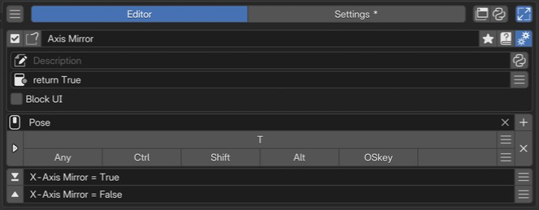

Sticky Key Editor¶
Sticky Key runs separate actions when a key is pressed and released. Pairing saved values with restoration creates a temporary state while the key is held. Its two fixed slots, On Press and On Release, form the press/release pair.
This page describes PME 2.1 settings.
Configuration guide — features, combinations, and uses (for AI)
Name: Sticky Key / Type ID: STICKY.
Assigns different actions to press and release. Combine those actions to create a state that lasts only while the key is held.
Inputs: two fixed slots, On Press / On Release, each accepting Command or Hotkey. See slots.
Constraints: slots cannot be reordered, added, removed, or individually disabled. An unset release action does not automatically restore the previous state.
Temporary values: for a single property assignment, Save and Restore Previous Value generates save/restore code. The original value is read at runtime.
Combinations: temporarily switch tools or 3D Viewport display settings. If the intent is to block other processing, check Block UI and the calling context.
Execution requirements: referenced targets must be valid at press and release, and the trigger key’s release must be received. If the workflow changes areas or modes, also define which target should be restored.
Validation: vary the starting value and repeat press/release to verify restoration of the original value rather than a fixed value. See usage patterns.
Variable lifetime: Commands share saved values from one press through its release. See shared variables and restoration.
Interface and editing workflow¶

1Name and basic controlsCheck the name of the setup assigned to key press and release. 2Advanced settingsSet the description, availability conditions, and whether to block the UI while held. 3Keymap / HotkeyChoose where to use it and which key to hold. This example uses T in Pose. 4Press and release slotsThe upper slot runs on press, the lower on release. This example sets a mirror option to True and False.Select a Sticky Key in the list, check its name and enabled state, then configure invocation and slots. See Common Editor Elements for lists, search, and tags; see name, hotkeys, slots, and advanced settings for each section.
Name and basic controls¶
Identify the configuration by its name and enabled state. For tags, renaming, references, and related controls, see selected menu settings. This type has no menu preview button.
Keymap / Hotkey¶
Set where and how to invoke it. See the shared Hotkey settings for input controls.
Sticky Key requires both press and release events. Standalone Ctrl / Alt / Shift and OS-reserved keys can be affected by platform behavior and Blender Keymap priority. See Choosing a Keymap.
Slots¶
Sticky Key has two fixed slots with defined roles.
Order |
Slot |
Role |
|---|---|---|
1 |
On Press |
Runs when pressed, such as entering a temporary state |
2 |
On Release |
Runs when released, such as restoring the original state |
Slots cannot be reordered, added, removed, or disabled.
Save and Restore Previous Value¶
With a single property assignment in On Press, the slot editor can generate save/restore code. For example, use the following assignment to temporarily hide the 3D Viewport floor grid.
C.space_data.overlay.show_floor = False
The button rewrites On Press and On Release as follows:
Destination |
Generated action |
|---|---|
On Press |
Saves the runtime value in |
On Release |
Assigns saved |
The saved value is read when the Sticky Key is actually pressed, not when you edit it with this button.
Existing On Release code is also replaced. Check both slots after generation if you already have custom behavior.
The path must be valid at both times. This example requires C.space_data to be a 3D Viewport.
Remember on press, restore on release¶
Hide the floor grid only while the key is held. On Release can use a value saved by On Press.
flowchart LR
A["Press<br/>Save original state"] --> B["While held<br/>Hide grid"]
B --> C["Release<br/>Restore state"]
classDef remember fill:#e8f1fb,stroke:#4878aa,color:#172b43;
classDef restore fill:#e8f5ed,stroke:#45805d,color:#183f28;
class A,B remember;
class C restore;
1. On Press Command — save the original state, then hide
view = C.space_data; start_floor = view.overlay.show_floor; view.overlay.show_floor = False
2. On Release Command — restore the state in the same view
view.overlay.show_floor = start_floor
Set Keymap to 3D View, then press and release in a perspective 3D Viewport. If the grid was already hidden, it remains hidden after release.
view and start_floor are names you choose. start_floor could be banana, provided save and restore use the same name. The value generated by Save and Restore uses this same variable sharing.
To pass values to another independent invocation or menu, use temporary shared storage U (User Data).
Shared scope and restoration requirements
Lifetime: On Press and On Release Commands share a Python namespace. Starting a new Sticky Key when none is active creates a new namespace; previous values are not retained.
Restoration target: this example stores the originating 3D Viewport in
viewand requires it to remain available. Generated Save and Restore code re-evaluates the same property path on release, so also save the target reference if it can change during the operation.Names: do not overwrite PME-provided names such as
CorEto store values.Restoration: On Release is not
finallyfor arbitrary failures. Ending On Press throughreturn_valuewithout continuing skips the normal release wait. There is no automatic recovery for errors before saving, errors in restore code, or interrupted execution.
Advanced settings¶
Open these with the gear button. See the shared advanced settings for Description and Poll.
- Block UI:
Prevents input from reaching other tools while Sticky Key is active. Off by default. It does not stop the screen from redrawing.
Code and input fields¶
See the configuration guide above for supported inputs. Field controls are covered in the shared Slot Editor; code guidance is in Code Input and Execution and Code Examples.
Usage patterns and conditions to check¶
Temporarily switch a brush or active tool¶
Save the current brush or tool and switch it in On Press; restore the saved target in On Release.
Use Blender’s bpy.ops.wm.tool_set_by_id() to switch tools and
C.workspace.tools.from_space_view3d_mode(C.mode) to inspect the current tool.
Define behavior for missing results, a changed mode, or a tool ID unavailable in that mode.
Brush asset handling depends on the Blender version. The older example
paint_settings().brush = D.brushes["Draw"] assumes a brush with that name and a version/mode where assignment is supported.
Check how to obtain and activate brushes in your environment before using it.
See U examples for sharing temporary values and Run an external file for external scripts.
Temporarily switch viewport overlays¶
Enter the following in On Press and click Save and Restore. The restore code is inserted into On Release automatically.
C.space_data.overlay.show_floor = False
Temporarily switch shading mode¶
C.space_data.shading.type = 'WIREFRAME'
Save and Restore inserts code in On Release to restore the original shading mode.
Related pages